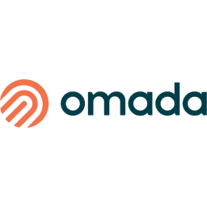
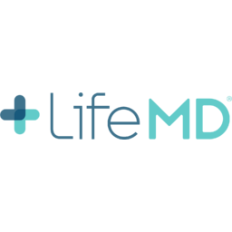

Et af de … temaer i NewDeal Invest
Sundhed og biotek
Selskaber, der udvikler medicin og nye behandlinger eller bringer lægen hjem til patienten.
Det kan være et lægemiddel mod overvægt, en ny type behandling, der retter en fejl i generne, eller en app, hvor man taler med en læge og får medicinen sendt hjem. I fonden består temaet af … selskaber.
Her udforsker du fondens selskaber i temaet. Udvalget dækker ikke hele teknologiområdet.
AI-genererede forklaringer og forenklede illustrationer · Om indhold og kilder
Her udforsker du fondens investeringer, ikke en fuldstændig gennemgang af teknologiområder eller selskaber. Selskabsbeskrivelserne bygger på selskabernes egne oplysninger og øvrige angivne kilder. De er ikke manuelt faktatjekket af NewDeal Invest og kan indeholde fejl eller være forældede.
Illustrationerne forenkler sammenhængene. En forbindelse viser ikke i sig selv et dokumenteret kunde- eller leverandørforhold. Fondstal vises særskilt med kilde og dato. NewDeal Invests egne kommentarer og citater er angivet med afsender og kilde.
Forandringen
Ny medicin og lægen i telefonen
Medicin mod overvægt er på få år blevet almindelig. I 2021 hentede 15.200 voksne danskere et slankelægemiddel på apoteket. I 2023 var det 117.500, næsten otte gange så mange.
Samtidig er nye måder at behandle på nået fra laboratoriet til patienten. Vacciner med mRNA blev brugt mod covid-19, og i 2023 blev den første behandling med gensaksen CRISPR godkendt.
Også lægebesøget har flyttet sig. Mange patienter taler med en læge over nettet, får medicinen sendt hjem og følger et behandlingsprogram i en app.
- Mounjaro23,0 mia. dollarMod diabetes · 99 % mere end året før
- Zepbound13,5 mia. dollarMod overvægt · 175 % mere end året før
- Øvrige lægemidler28,7 mia. dollarResten af Eli Lillys omsætning
Mounjaro og Zepbound indeholder det samme aktive stof, tirzepatid.
Vejen til patienten
Træk et lægemiddel gennem forsøgene
Prikkerne er 100 lægemidler, der afprøves på mennesker for første gang. Træk i skyderen, og se hvor mange der når frem til patienterne.
100 af 100 er stadig med
Trin 1 af 5 · Fase 1
Er det sikkert?
Lægemidlet gives for første gang til mennesker, ofte til en lille gruppe. Forsøget skal først og fremmest vise, om det er sikkert.
Af 100 lægemidler, der når fase 1, er omkring 47 med videre efter dette trin.
Trin 2 af 5 · Fase 2
Virker det?
Nu prøves det på flere patienter med sygdommen. Virker det, og hvilken dosis er den rigtige? Her stopper flest.
Af 100 lægemidler, der når fase 1, er omkring 13 med videre efter dette trin.
Trin 3 af 5 · Fase 3
Virker det i stor skala?
Hundredvis eller tusindvis af patienter får enten lægemidlet eller en anden behandling. Forsøget skal vise, at det virker og er sikkert i stor skala.
Af 100 lægemidler, der når fase 1, er omkring 7 med videre efter dette trin.
Fondens selskaber på dette trin:
Trin 4 af 5 · Ansøgning
Siger myndigheden ja?
Selskabet sender alle resultater til myndigheden, i USA FDA, som vurderer sikkerhed, virkning og kvalitet.
Af 100 lægemidler, der når fase 1, er omkring 7 med videre efter dette trin.
Fondens selskaber på dette trin:
Trin 5 af 5 · Godkendt
Nu må det sælges
Lægemidlet må sælges til patienterne. Vejen fra fase 1 hertil tager i gennemsnit omkring 10,5 år.
Omkring 7 af 100 lægemidler, der når fase 1, bliver godkendt.
Fondens selskaber på dette trin:
Tallene bygger på, hvor mange lægemidler der kom videre fra hver fase i perioden 2014 til 2023. De gælder ikke for det enkelte selskab. Forenklet eksempel.
Forretningsmodellerne
Tre måder sundhedsselskaberne tjener penge på
Nogle selskaber sælger behandling i dag. Andre er stadig ved at udvikle den. Bjælken viser, hvor meget hver gruppe fylder i fonden.
Digital sundhed og sundhedsydelser
…af fonden
Patienter får lægekonsultationer, medicin og behandlingsprogrammer over nettet, og hospitaler køber undersøgelser, der finder ud af, hvad en patient fejler. Hims & Hers og LifeMD tjener mest på abonnementer, som forbrugerne selv betaler. Hinge Health har især arbejdsgivere som kunder, Tempus AI sælger gentests og data, og Oscar Health er selv en sygeforsikring.
- Hims & Hers HealthPlatform for sundhed og velvære direkte til forbrugerne. Tilknyttede lægegrupper står for konsultationer over nettet, og selskabet står for levering og opfølgning.
- Tempus AITeknologiselskab inden for sundhed. Forretningen er delt i diagnostik og i data og software.

Omada HealthProgrammer over nettet for forstadier til diabetes, diabetes og forhøjet blodtryk, fysioterapi og støtte til medlemmer, der tager medicin af typen GLP-1.
LifeMDLægebehandling over nettet og apoteksydelser direkte til patienter.- Hinge HealthBehandling af muskel- og skeletlidelser med træning, måleudstyr og hjælp fra behandlere. AI hjælper med at tilpasse træningen. Kunderne er især arbejdsgivere, der selv betaler de ansattes sundhedsudgifter.
- Oscar HealthSygeforsikring i USA til enkeltpersoner, familier og ansatte.
Bioteknologi
…af fonden
Selskaberne udvikler nye typer behandling med mRNA, CRISPR og antistoffer. Mange af dem tjener endnu få penge på egne produkter. Indtægterne kommer ofte fra samarbejdspartnere og fra få godkendte behandlinger, som BioNTech deler med Pfizer og CRISPR Therapeutics med Vertex.
- BioNTechUdvikler behandlinger, der bruger kroppens eget immunforsvar (immunterapi). Har covid-19-vaccinen sammen med Pfizer og behandlinger mod kræft under udvikling.
- Intellia TherapeuticsBiotekselskab, der bruger CRISPR til at rette i DNA (genredigering).
- CRISPR TherapeuticsBiotekselskab, der udvikler behandlinger med CRISPR.
- AbCellera BiologicsUdvikler lægemidler baseret på antistoffer og har behandlinger under afprøvning på mennesker.
Lægemidler og produktion
…af fonden
Eli Lilly udvikler, fremstiller og sælger sine egne lægemidler. Bachem fremstiller byggesten til lægemidler for andre medicinal- og biotekselskaber. Lilly tjener på sine egne lægemidler, og over halvdelen af omsætningen kom i 2025 fra to af dem. Bachem tjener på at producere for andre.
Grupperne er NewDeal Invests egen opdeling. Beskrivelserne bygger på selskabernes egne årsrapporter, se kilderne. Andele i PMINDI pr. … (fondens data). Siden giver ingen råd om medicin.
Forklaringen
Hvem betaler for behandlingen?
I USA er det ikke altid patienten, der betaler. Det afgør, hvem selskaberne skal overbevise.
- Patienten selv
Betaler et abonnement for konsultationer og medicin, der sendes hjem.
- Arbejdsgiveren eller forsikringen
Betaler for, at de ansatte eller medlemmerne kan bruge et behandlingsprogram i en app.
- Staten og medlemmerne
Hos Oscar Health, som selv er en sygeforsikring, kommer betalingen for forsikringerne mest fra den amerikanske stat som tilskud og resten fra medlemmerne.
Det har vi skrevet
NewDeal Invests perspektiv
Ordret uddrag af NewDeal Invests egne ugebreve og indlæg om temaet, med dato og link til hele teksten. Det er ikke en anbefaling.
"Intuitive Surgical, der udvikler kirurgiske robotter, gør det muligt for kirurgen at styre operationen via et joystick fra en fjern position. Robotten, meget passende kaldet Da Vinci, indsamler samtidig data, der fungerer som en slags co-pilot og assisterer kirurgen med råd og vejledning."
Nævner: Intuitive Surgical
Læs hele teksten på bloggen (åbner i nyt vindue)Risici
Risici ved sundhed og biotek
Forsøg kan mislykkes
Kun omkring 7 ud af 100 lægemidler, der afprøves på mennesker, bliver godkendt. Et mislykket forsøg kan koste et lille biotekselskab meget.
Lang vej til indtægt
Nogle selskaber har næsten ingen omsætning, mens de udvikler behandlinger, og kan få brug for flere penge undervejs.
Få produkter
Over halvdelen af Eli Lillys omsætning kom i 2025 fra to lægemidler. Konkurrence eller lavere priser på dem kan mærkes i hele selskabet.
Priser og regler
Myndigheder og forsikringer kan presse priserne ned, og nye regler kan ændre, hvad selskaberne må sælge over nettet.
Hvem betaler
Når en arbejdsgiver eller staten betaler, kan ændrede regler eller budgetter få omsætningen til at falde.
Kilder: risikoafsnittene i årsrapporterne for 2025 fra CRISPR Therapeutics (åbner i nyt vindue), Eli Lilly (åbner i nyt vindue), Hims & Hers Health (åbner i nyt vindue), Hinge Health (åbner i nyt vindue) og Oscar Health (åbner i nyt vindue) samt Citeline, april 2024 (åbner i nyt vindue). Listen er et udvalg og ikke en fuldstændig oversigt. Siden giver ingen råd om medicin.
Kilder og kreditering
Tal og tekst
- Temaer og grupper: NewDeal Invests egen opdeling.
- Slankelægemidler i Danmark (15.200 voksne i 2021, 27.800 i 2022 og 117.500 i 2023): Danmarks Statistik, analyse om brugere af slankelægemidler (åbner i nyt vindue).
- Nye lægemidler i USA (46 i 2025): FDA, Novel Drug Approvals for 2025 (åbner i nyt vindue) og FDA, New Drug Therapy Approvals 2025 (åbner i nyt vindue).
- Eli Lilly: årsrapport 2025 (åbner i nyt vindue), omsætning 65.179 mio. dollar, heraf Mounjaro 22.965 mio. og Zepbound 13.542 mio.
- Andel af lægemidler, der når fra fase 1 til godkendelse (6,7 %), og andelen, der kommer videre fra hver fase (47,3 %, 28,0 %, 55,0 % og 91,8 %), 2014 til 2023: Citeline, "Why Are Clinical Development Success Rates Falling?", april 2024 (åbner i nyt vindue). Gennemsnitlig tid fra fase 1 til godkendelse, 10,5 år: BIO, Informa og QLS, "Clinical Development Success Rates 2011-2020" (åbner i nyt vindue). Prikkerne er afrundet til hele tal.
- Intellia Therapeutics: pressemeddelelse 8.9.2026 om lonvo-z (åbner i nyt vindue) og årsrapport 2025 (åbner i nyt vindue).
- Godkendte behandlinger: årsrapporterne for 2025 fra CRISPR Therapeutics (åbner i nyt vindue), BioNTech (åbner i nyt vindue) og Eli Lilly (åbner i nyt vindue).
- Hvad selskaberne laver, og hvem der betaler: årsrapporterne for 2025 fra Hims & Hers Health (åbner i nyt vindue), Tempus AI (åbner i nyt vindue), LifeMD (åbner i nyt vindue), Omada Health (åbner i nyt vindue), Hinge Health (åbner i nyt vindue), Oscar Health (åbner i nyt vindue), Intellia Therapeutics (åbner i nyt vindue), AbCellera Biologics (åbner i nyt vindue) og Bachem (åbner i nyt vindue).
- Citatet: NewDeal Invest, "Amerikansk paradigmeskifte og techregnskaber", 27.1.2025 (åbner i nyt vindue).
Tegninger og logoer
- Tegningen af vejen gennem forsøgene, ikonerne og de små figurer er forenklede tegninger lavet af NewDeal Invest med hjælp fra AI.
- Logoer tilhører de enkelte selskaber.